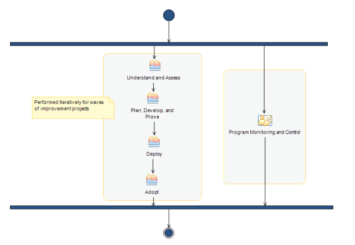

| Welcome to the IBM Practices for Software Capability Improvement |
 |
|
Main Description
Software Capability Improvement consists of three practices:
 If the organization does not manage capability improvement as a program, process and tools adoption is at risk. Without a managed program it is difficult to:
It is critical that the organizational software capability improvement team sees themselves as a service organization measured by the success of the software development projects it supports. |
Licensed Materials - Property of IBM |